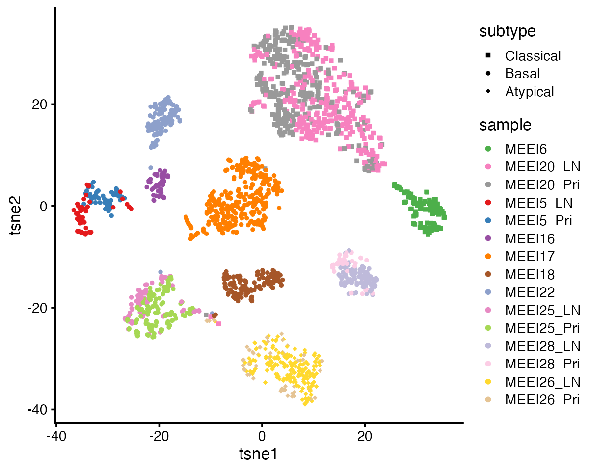

Dissecting tumor transcriptional heterogeneity from multi-tumor single-cell RNA-seq data using GBCD
2024-05-09
Source:vignettes/hnscc.Rmd
hnscc.RmdOverview
This vignette shows how to apply GBCD (“Generalized Binary Covariance Decomposition”) to jointly analyze single-cell RNA-seq (scRNA-seq) data from malignant cells collected from multiple patients and/or studies.
GBCD can effectively dissect tumor transcriptional heterogeneity into patient/study-specific and shared gene expression programs (GEPs). GBCD is “unsupervised” in that, unlike tumor-by-tumor (e.g., Puram et al. 2017) and many harmonization approaches (e.g., Harmony, LIGER), it does not use information about which cell comes from which tumor or study. Instead, GBCD only requires the combined scRNA-seq data from all tumors, which are stored as an \(N \times J\) matrix \(Y\) of expression values with entries \(y_{ij}\), where \(i=1,\dots,N\) indexes malignant cells and \(j=1,\dots,J\) indexes genes. In typical applications, \(Y\) contains “shifted log” counts (following the terminology of this paper).
GBCD yields a decomposition of the expression data matrix \(Y\) into matrices \(L\) and \(F\) such that \(Y \approx L F^T\): \[ y_{ij} \approx \sum_{k=1}^K l_{ik} f_{jk}. \] The elements \(l_{ik} \geq 0\) each represent the membership of cell \(i\) in GEP \(k\); \(f_{jk}\) represents the effect of GEP \(k\) on the expression of gene \(j\). When \(y_{ij}\) are shifted log counts, each \(f_{jk}\) approximately represents the log-fold change (LFC) associated with membership in GEP \(k\), so we refer to the \(f_{jk}\) values as LFCs, and we refer to the vector of LFCs \((f_{1k}, \dots, f_{Jk})^T\) as the “signature” of GEP \(k\).
We begin our analysis by loading the needed R packages.
The HNSCC dataset
This dataset contained gene expression data for 2,176 malignant cells collected from primary tumors from 10 HNSCC patients and matching lymph node (LN) metastases from 5 of these patients. Puram et al. (2017) found that each of these 10 patients clearly mapped to a molecular subtype of HNSCC, whose signatures were previously defined by analysis of bulk expression data of 279 TCGA HNSCC tumors. Puram et al. (2017) defined the transformed counts as \(y_{ij} = \log_2(1 + \mathrm{TPM}_{ij}/10)\), where \(\mathrm{TPM}_{ij}\) was the transcript-per-million (TPM) value for gene \(j\) in cell \(i\).
data(hnscc)
dim(hnscc$Y)
head(hnscc$info)
# [1] 2176 17113
# cell.id lymph.node cancer.cell
# HN26_P14_D11_S239_comb HN26_P14_D11_S239_comb 1 1
# HN26_P25_H09_S189_comb HN26_P25_H09_S189_comb 1 1
# HN26_P14_H06_S282_comb HN26_P14_H06_S282_comb 1 1
# HN25_P25_C04_S316_comb HN25_P25_C04_S316_comb 1 1
# HN26_P25_C09_S129_comb HN26_P25_C09_S129_comb 1 1
# HNSCC26_P24_H05_S377_comb HNSCC26_P24_H05_S377_comb 1 1
# cell.type patient.id sample subtype
# HN26_P14_D11_S239_comb 0 T26 MEEI26_LN Atypical
# HN26_P25_H09_S189_comb 0 T26 MEEI26_LN Atypical
# HN26_P14_H06_S282_comb 0 T26 MEEI26_LN Atypical
# HN25_P25_C04_S316_comb 0 T25 MEEI25_LN Basal
# HN26_P25_C09_S129_comb 0 T26 MEEI26_LN Atypical
# HNSCC26_P24_H05_S377_comb 0 T26 MEEI26_LN AtypicalVisualize HNSCC data using t-SNE
We plot the 2-D t-SNE embedding of the 2,176 malignant cells, colored by patient-of-origin and tumor stage (primary tumor, LN metastasis), and shaped is varied by tumor molecular subtype. Due to the presence of strong inter-tumor heterogeneity, these cells demonstrate strong patient effects that are typical of cancer data; the major structure in the t-SNE visualization is the clustering of the cells by patient:
set.seed(1)
cols <- order(apply(hnscc$Y,2,sd),decreasing = TRUE)
cols <- cols[1:3000]
res <- Rtsne(as.matrix(hnscc$Y[,cols]),normalize = TRUE)
colnames(res$Y) <- c("tsne1","tsne2")
pdat <- cbind(res$Y,hnscc$info)
ggplot(pdat,aes(x = tsne1,y = tsne2,color = sample,shape = subtype)) +
geom_point(size = 1) + scale_color_manual(values = hnscc$sample_col) +
scale_shape_manual(values = c(15,16,18)) +
theme_cowplot(font_size = 10)
Estimate GEP memberships and signatures using GBCD
To fit a GBCD model, “Kmax” needs to set. It is an upper bound of the number of components, \(K\). This is just for initialization purposes; the final number of GEPs returned by GBCD is close to but often not equal to (and can be larger than) Kmax. Generally speaking, a larger Kmax allows for identifying finer structure in tumor transcriptional heterogeneity, at the expense of higher computational cost. A good choice of Kmax depends on the complexity of the analyzed data (e.g., the number of patients and studies contained), and is often unknown in advance. Based on our experience, a value of Kmax between 10 and 40 usually works well, and users are encouraged to explore and compare the results for different values of Kmax.
Users also need to specify a prior for GEP membership values. GBCD assigns a “generalized binary” (GB) prior independently to each entry of \(L\), \[l_{ik}\sim (1-\pi_k^l) \delta_0 + \pi_k^l \: N_{+} (\mu_k, \sigma_k^2),\] where the ratio \(\sigma_k/\mu_k\) is fixed at some pre-specified small value. In this application, we set \(\sigma_k/\mu_k = 0.04\) for each \(k\). A smaller ratio is generally recommended for larger datasets containing more cells, and a value between 0.01 to 0.1 usually works well.
Note that the patient/dataset identity information of cells is not needed to run GBCD.
For the purposes of reducing the running time, here we set
Kmax = 12, and we limit the number of backfitting
iterations to maxiter1 = 100 (for initializing L),
maxiter2 = 50 (for estimating L), and
maxiter3 = 50 (for estimating F).
res.gbcd <- fit_gbcd(Y = hnscc$Y, Kmax = 12, maxiter1 = 100,
maxiter2 = 50, maxiter3 = 50,
prior = flash_ebnm(prior_family = "generalized_binary",
scale = 0.04))
# [1] "Form cell by cell covariance matrix..."
# user system elapsed
# 15.207 0.072 16.125
# [1] "Initialize GEP membership matrix L..."
# Adding factor 1 to flash object...
# Wrapping up...
# Done.
# Adding factor 2 to flash object...
# Adding factor 3 to flash object...
# Adding factor 4 to flash object...
# Adding factor 5 to flash object...
# Adding factor 6 to flash object...
# Adding factor 7 to flash object...
# Adding factor 8 to flash object...
# Adding factor 9 to flash object...
# Adding factor 10 to flash object...
# Adding factor 11 to flash object...
# Adding factor 12 to flash object...
# Wrapping up...
# Done.
# Backfitting 12 factors (tolerance: 7.06e-02)...
# Difference between iterations is within 1.0e+04...
# Difference between iterations is within 1.0e+03...
# Difference between iterations is within 1.0e+02...
# --Maximum number of iterations reached!
# Wrapping up...
# Done.
# Backfitting 12 factors (tolerance: 7.06e-02)...
# Difference between iterations is within 1.0e+04...
# Difference between iterations is within 1.0e+03...
# Difference between iterations is within 1.0e+02...
# Difference between iterations is within 1.0e+01...
# --Maximum number of iterations reached!
# Wrapping up...
# Done.
# user system elapsed
# 35.554 2.770 39.815
# [1] "Estimate GEP membership matrix L..."
# Backfitting 23 factors (tolerance: 7.06e-02)...
# Difference between iterations is within 1.0e+05...
# Difference between iterations is within 1.0e+04...
# Difference between iterations is within 1.0e+03...
# --Maximum number of iterations reached!
# Wrapping up...
# Done.
# Backfitting 23 factors (tolerance: 7.06e-02)...
# Difference between iterations is within 1.0e+03...
# Difference between iterations is within 1.0e+02...
# --Maximum number of iterations reached!
# Wrapping up...
# Done.
# user system elapsed
# 64.059 3.096 67.728
# [1] "Estimate GEP signature matrix F..."
# Backfitting 23 factors (tolerance: 5.55e-01)...
# Difference between iterations is within 1.0e+03...
# Difference between iterations is within 1.0e+02...
# --Maximum number of iterations reached!
# Wrapping up...
# Done.
# user system elapsed
# 314.585 13.651 331.738Note that users can also specify other nonnegative priors for GEP
membership values. For example, users can specify a point exponential
prior by setting prior = ebnm_point_exponential in the call
to fit_gbcd. However, we find that the GB prior usually
performs the best empirically to dissect tumor transcriptional
heterogeneity from multiple samples and/or studies.
Note that the above call to fit_gbcd may take 10 minutes
or slightly longer to complete on a laptop with 24GB RAM.
Interpret GEP membership estimates
We now look at the GEP membership estimates \(L\), in which elements \(l_{ik}\) represent membership of cell \(i\) in GEP \(k\). For example these are the memberships for the first few cells:
head(round(res.gbcd$L, 3))
# Baseline GEP1 GEP2 GEP3 GEP4 GEP5 GEP6 GEP7
# HN26_P14_D11_S239_comb 0.735 0 0.000 0.895 0.354 0.000 0.000 0.573
# HN26_P25_H09_S189_comb 0.657 0 0.141 0.776 0.000 0.479 0.000 0.617
# HN26_P14_H06_S282_comb 0.791 0 0.244 0.710 0.606 0.000 0.000 0.713
# HN25_P25_C04_S316_comb 0.412 0 0.661 0.212 0.000 0.649 0.000 0.000
# HN26_P25_C09_S129_comb 0.645 0 0.000 0.743 0.000 0.382 0.000 0.733
# HNSCC26_P24_H05_S377_comb 0.586 0 0.000 0.739 0.000 0.405 0.345 0.696
# GEP8 GEP9 GEP10 GEP11 GEP12 GEP13 GEP14 GEP15 GEP16
# HN26_P14_D11_S239_comb 0 0.000 0.664 0 0 0.437 0.000 0.000 0.000
# HN26_P25_H09_S189_comb 0 0.000 0.000 0 0 0.471 0.000 0.591 0.000
# HN26_P14_H06_S282_comb 0 0.000 0.000 0 0 0.452 0.000 0.000 0.585
# HN25_P25_C04_S316_comb 0 0.695 0.672 0 0 0.606 0.793 0.670 0.000
# HN26_P25_C09_S129_comb 0 0.000 0.000 0 0 0.000 0.000 0.748 0.000
# HNSCC26_P24_H05_S377_comb 0 0.000 0.000 0 0 0.000 0.461 0.586 0.000
# GEP17 GEP18 GEP19 GEP20
# HN26_P14_D11_S239_comb 0 0.00 0 0
# HN26_P25_H09_S189_comb 0 0.00 0 0
# HN26_P14_H06_S282_comb 0 0.36 0 0
# HN25_P25_C04_S316_comb 0 0.00 0 0
# HN26_P25_C09_S129_comb 0 0.00 0 0
# HNSCC26_P24_H05_S377_comb 0 0.00 0 0Let’s create a heatmap to visualize GEP membership estimates. First we add the sample and molecular subtype annotation of cells to visualize the GEP memberships:
anno <- data.frame(sample = hnscc$info$sample, subtype = hnscc$info$subtype)
rownames(anno) <- rownames(res.gbcd$L)
anno_colors <- list(sample = hnscc$sample_col, subtype = hnscc$subtype_col)
cols <- colorRampPalette(c("gray96", "red"))(50)
brks <- seq(0, 1, 0.02)Now we can plot the annotated heatmap of GEP memberships:
pheatmap(res.gbcd$L[order(anno$sample), -c(1)], cluster_rows = FALSE,
cluster_cols = FALSE, show_rownames = FALSE, annotation_row = anno,
annotation_colors = anno_colors, annotation_names_row = FALSE,
angle_col = 45, fontsize = 9, color = cols, breaks = brks,
main = "")This heatmap shows the memberships of the 2,176 cells (rows) for the 20 GEPs (the “baseline” is not included). Cells are arranged top-to-bottom by tumor molecular subtype and by patient-of-origin. Membership values are rescaled separately for GEPs so that the maximum membership value for each GEP is always 1.
From this heatmap, we see that GEPs 1-3 correspond closely to the molecular subtypes previously defined based on bulk RNA-seq data: GEP1 is largely active only in cells from the 2 classical patients; GEP2 is mainly active in cells from the 7 basal patients; and GEP3 is mainly active in cells from the one atypical patient. This demonstrates that GBCD can extract the molecular subtype information de novo from the single cell data alone.
Among other GEPs, some are active predominantly in an individual patient and can thus be interpreted as patient-specific GEPs, such as GEPs 8, 9 and 11; other GEPs are shared across patients but do not correspond to molecular subtypes. The degree of patient-specific vs. shared expression for each GEP can be quantified using the “gep_annotation” function.
GEP signature estimates
We next look at the matrix of GEP signature estimates \(F\) with each entry \(f_{jk}\) approximately representing the log-fold change associated with membership in GEP \(k\) (with the base-2 logarithm).
head(round(res.gbcd$F$lfc, 3))
# Baseline GEP1 GEP2 GEP3 GEP4 GEP5 GEP6 GEP7 GEP8
# C9orf152 0.000 0.064 0.000 0.004 0.000 0.003 0.000 0.000 0.000
# ELMO2 2.056 0.000 -0.466 0.715 0.003 -0.273 -0.065 0.015 -0.051
# PNMA1 1.933 0.003 -1.326 0.035 -0.002 0.019 -0.043 -0.019 -0.018
# MMP2 0.763 -0.468 2.441 -0.897 -0.005 0.786 -0.597 -0.004 -1.206
# TMEM216 2.141 1.046 -0.652 0.021 0.006 -0.012 -0.115 -0.021 -0.002
# TRAF3IP2-AS1 0.216 0.293 0.000 0.588 0.001 0.132 0.000 0.003 0.000
# GEP9 GEP10 GEP11 GEP12 GEP13 GEP14 GEP15 GEP16 GEP17
# C9orf152 0.000 -0.003 -0.004 0.000 0.002 0.084 0.000 0.000 0.000
# ELMO2 0.081 0.005 -0.764 -0.036 0.348 -0.352 -0.566 -0.019 -0.003
# PNMA1 2.154 0.065 -0.017 0.339 0.731 0.012 -0.048 0.014 -0.002
# MMP2 0.051 -0.031 0.026 -0.867 0.800 0.348 -0.508 0.035 -0.297
# TMEM216 1.137 -0.088 -0.401 -0.262 0.189 -0.605 -0.013 -0.429 -0.055
# TRAF3IP2-AS1 0.005 0.013 0.011 -0.004 0.025 0.449 -0.002 0.019 -0.001
# GEP18 GEP19 GEP20
# C9orf152 0.014 -0.001 0.000
# ELMO2 -0.104 0.060 0.019
# PNMA1 -0.007 -0.008 0.022
# MMP2 -1.498 -0.020 3.791
# TMEM216 -0.037 -0.012 0.029
# TRAF3IP2-AS1 -0.002 0.042 -0.001Here we create a volcano plot to visualize the gene signature for a
given GEP (using GEP2 as an example). This plot makes use of posterior
statistics outputted by the fit_gbcd call, including the
z-scores and the local false sign rates (lfsr).
pdat <- data.frame(gene = rownames(res.gbcd$F$lfc),
lfc = res.gbcd$F$lfc[, "GEP2"],
z = abs(res.gbcd$F$z_score[, "GEP2"]),
lfsr = res.gbcd$F$lfsr[, "GEP2"],
stringsAsFactors = FALSE)
pdat <- transform(pdat, lfsr = cut(lfsr, c(-1, 0.001, 0.01, 0.05, Inf)))
rows <- with(pdat, which(!(abs(lfc) > quantile(abs(lfc), 0.998) | (z > 10))))
pdat[rows, "gene"] <- ""
ggplot(pdat, aes(x = lfc, y = z, color = lfsr, label = gene)) + geom_point() +
geom_text_repel(color = "black", size = 2.5, segment.color = "black",
segment.size = 0.25, min.segment.length = 0,
max.overlaps = Inf, na.rm = TRUE) +
scale_color_manual(values = c("coral", "orange", "gold", "deepskyblue")) +
labs(x = "log-fold change", y = "|posterior z-score|") +
guides(colour = guide_legend(override.aes = list(size = 2))) +
theme(plot.title = element_text(hjust = 0.5,size = 12),
axis.text = element_text(size = 10),
axis.title = element_text(size = 10),
legend.title = element_text(size = 12),
legend.text = element_text(size = 10),
legend.position = "bottom") +
ggtitle("Volcano plot of gene signature for GEP2")
Session info
This was the version of R and the packages that were used to generate these results.
sessionInfo()
# R version 4.3.3 (2024-02-29)
# Platform: aarch64-apple-darwin20 (64-bit)
# Running under: macOS Sonoma 14.4.1
#
# Matrix products: default
# BLAS: /Library/Frameworks/R.framework/Versions/4.3-arm64/Resources/lib/libRblas.0.dylib
# LAPACK: /Library/Frameworks/R.framework/Versions/4.3-arm64/Resources/lib/libRlapack.dylib; LAPACK version 3.11.0
#
# locale:
# [1] en_US.UTF-8/en_US.UTF-8/en_US.UTF-8/C/en_US.UTF-8/en_US.UTF-8
#
# time zone: America/Chicago
# tzcode source: internal
#
# attached base packages:
# [1] stats graphics grDevices utils datasets methods base
#
# other attached packages:
# [1] gbcd_0.1-19 flashier_1.0.53 ebnm_1.1-26 Rtsne_0.17
# [5] pheatmap_1.0.12 ggrepel_0.9.5 cowplot_1.1.3 ggplot2_3.5.0
# [9] Matrix_1.6-5
#
# loaded via a namespace (and not attached):
# [1] tidyselect_1.2.0 viridisLite_0.4.2 dplyr_1.1.4
# [4] farver_2.1.1 fastmap_1.1.1 lazyeval_0.2.2
# [7] digest_0.6.34 lifecycle_1.0.4 invgamma_1.1
# [10] magrittr_2.0.3 compiler_4.3.3 rlang_1.1.3
# [13] sass_0.4.8 progress_1.2.3 tools_4.3.3
# [16] utf8_1.2.4 yaml_2.3.8 data.table_1.15.2
# [19] knitr_1.45 prettyunits_1.2.0 labeling_0.4.3
# [22] htmlwidgets_1.6.4 scatterplot3d_0.3-44 RColorBrewer_1.1-3
# [25] withr_3.0.0 purrr_1.0.2 desc_1.4.3
# [28] grid_4.3.3 fansi_1.0.6 fastTopics_0.6-165
# [31] colorspace_2.1-0 scales_1.3.0 gtools_3.9.5
# [34] cli_3.6.2 rmarkdown_2.26 crayon_1.5.2
# [37] ragg_1.2.7 generics_0.1.3 RcppParallel_5.1.7
# [40] httr_1.4.7 pbapply_1.7-2 cachem_1.0.8
# [43] splines_4.3.3 parallel_4.3.3 softImpute_1.4-1
# [46] vctrs_0.6.5 jsonlite_1.8.8 hms_1.1.3
# [49] mixsqp_0.3-54 irlba_2.3.5.1 horseshoe_0.2.0
# [52] systemfonts_1.0.6 trust_0.1-8 plotly_4.10.4
# [55] jquerylib_0.1.4 tidyr_1.3.1 glue_1.7.0
# [58] pkgdown_2.0.7 uwot_0.1.16 Polychrome_1.5.1
# [61] gtable_0.3.4 quadprog_1.5-8 munsell_0.5.0
# [64] tibble_3.2.1 pillar_1.9.0 htmltools_0.5.7
# [67] truncnorm_1.0-9 R6_2.5.1 textshaping_0.3.7
# [70] evaluate_0.23 lattice_0.22-5 highr_0.10
# [73] memoise_2.0.1 SQUAREM_2021.1 ashr_2.2-64
# [76] bslib_0.6.1 Rcpp_1.0.12 deconvolveR_1.2-1
# [79] xfun_0.42 fs_1.6.3 pkgconfig_2.0.3